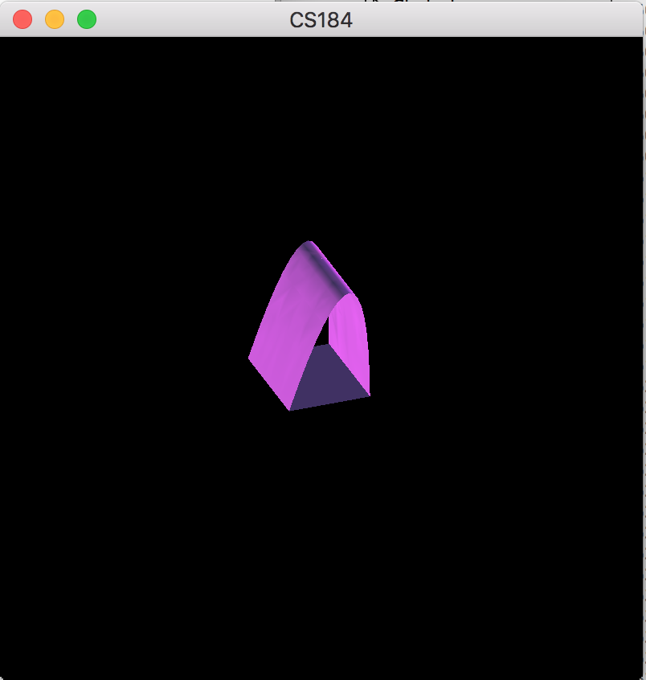
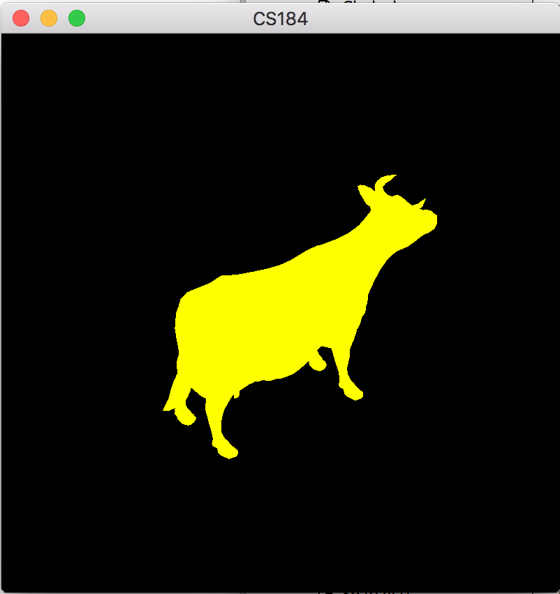
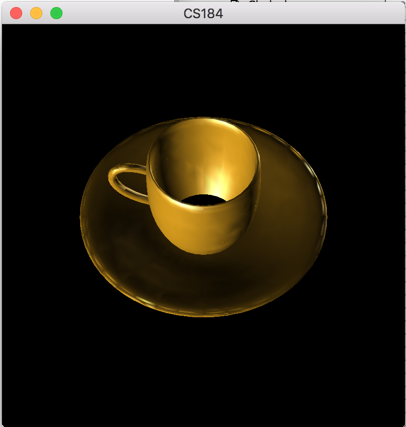
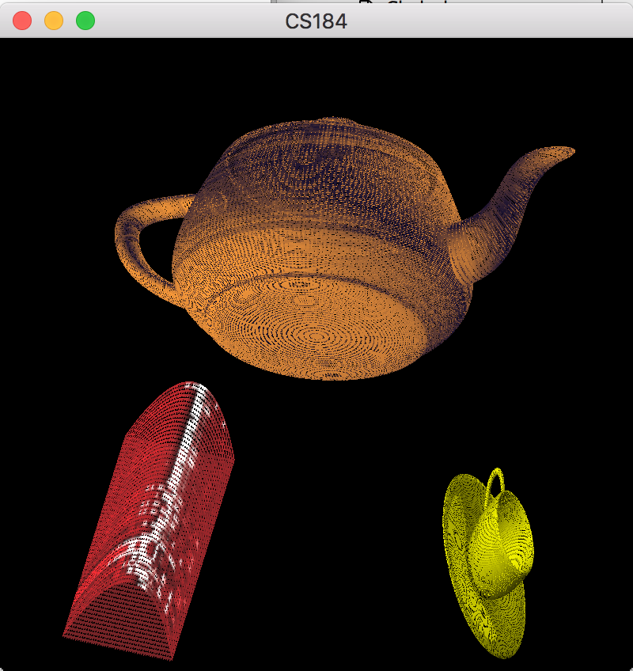
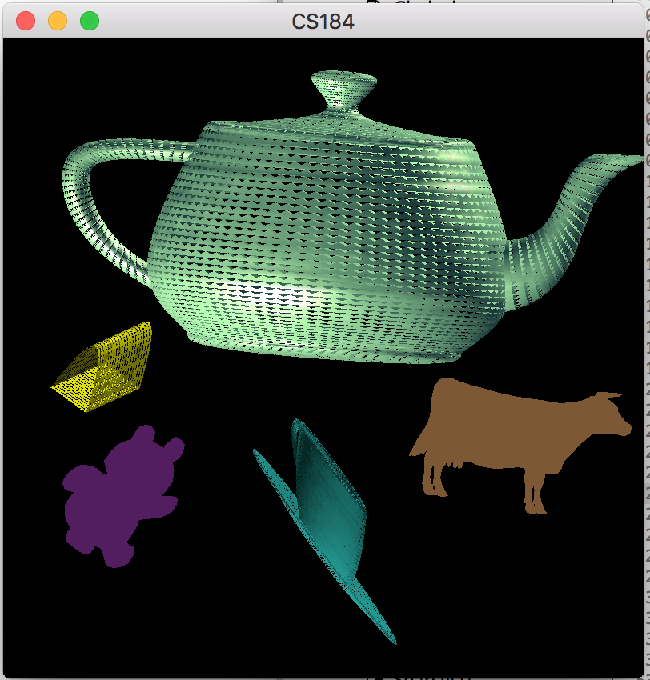
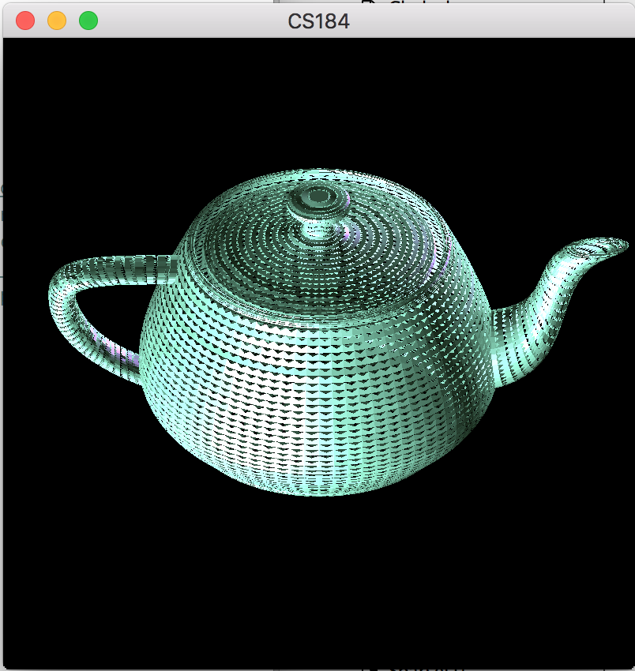
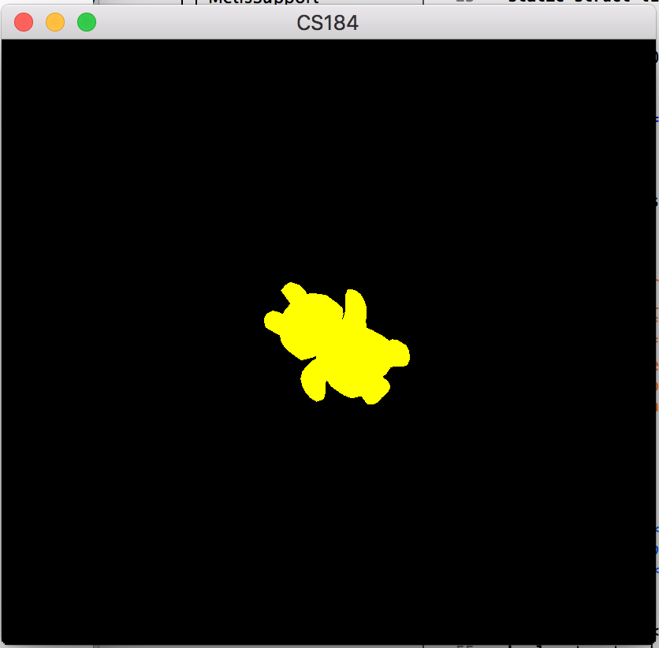
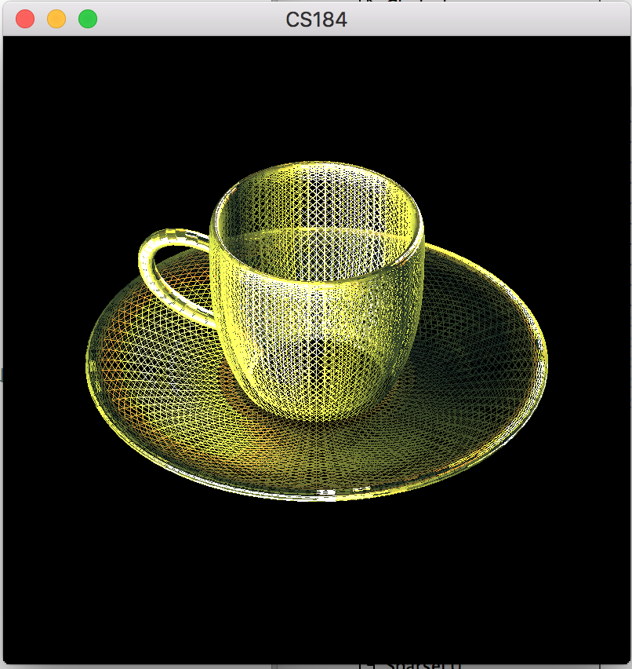

Assignment 3 (Home)
Converting Bézier patches to polygons (Adaptive/Uniform Techniques).
Arch

Cow (.obj)

Teacup (Flat Shading)
Teacup (Smooth Shading, Adaptive Tessellation)

Multiple .bez Objects

Multiple .bez and .obj Objects

Teapot (Uniform Subdivision)

Teddy Bear (.obj)

Teacup (Wireframe)
